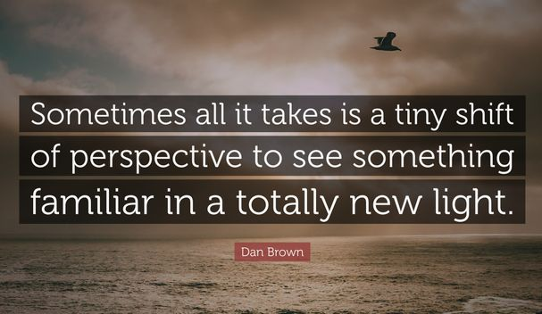

Personal Stuff
I like helping others in my community communicating my experience and knowledge related to different
topics. I understand that it is not always easy to help someone and sometimes it appears that
nothing changes no matter how hard you try, but I always try to do my best to help others so they
can live a happy life.
Sometimes to help someone, all it takes is hearing them.
